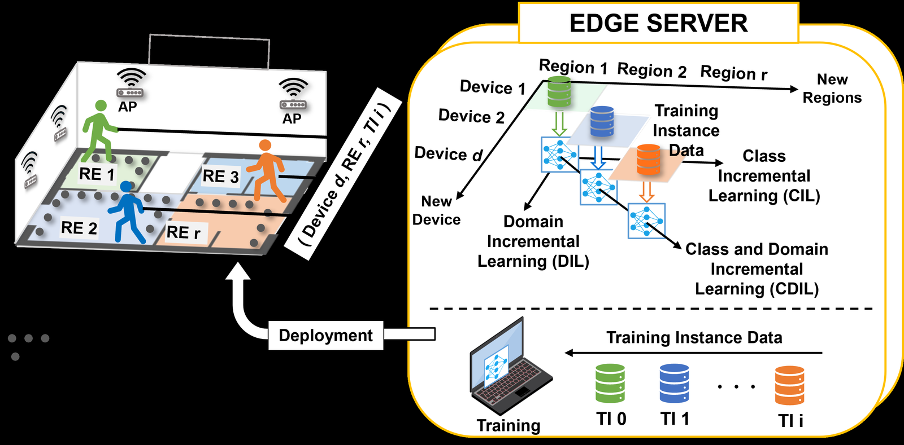
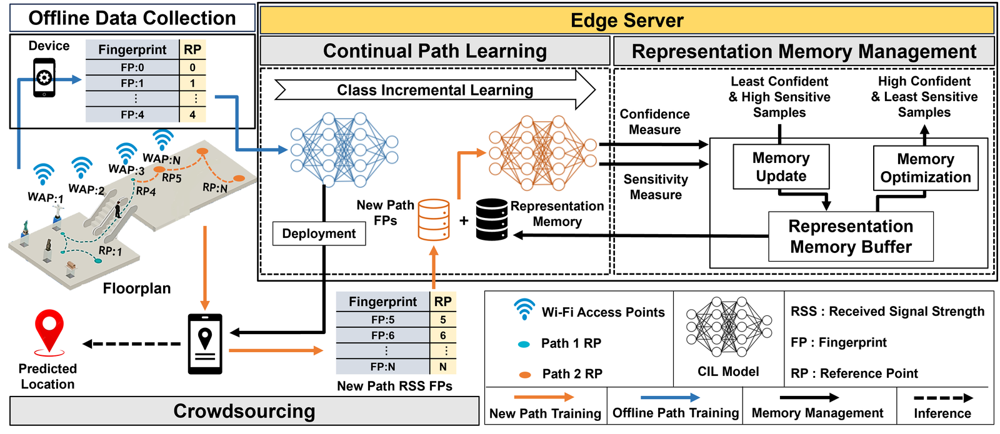
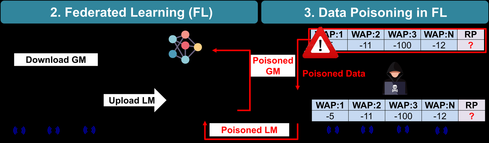
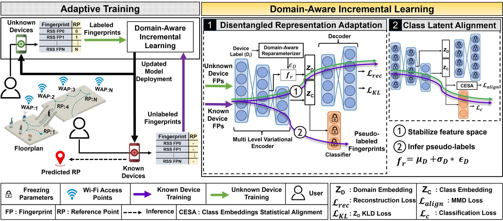
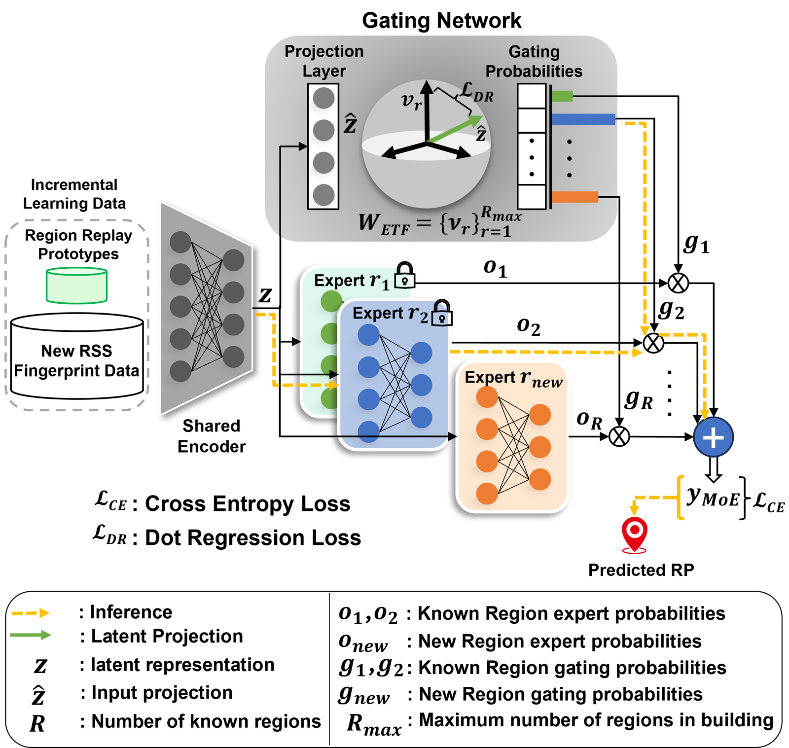

Continual & Incremental Learning
Architectures for class-incremental and domain-incremental adaptation without catastrophic forgetting across changing devices, buildings, and temporal conditions.
Colorado State University | EPIC Lab
PhD researcher in Computer Engineering specializing in scalable AI systems, continual learning, embedded TinyML, and adversarially resilient edge intelligence.
Research Identity
Akhil's work bridges theoretical machine learning and production-grade embedded deployment. His research targets sensor-driven systems where models must adapt over time, run under tight memory and latency budgets, and remain trustworthy under adversarial pressure.
Architectures for class-incremental and domain-incremental adaptation without catastrophic forgetting across changing devices, buildings, and temporal conditions.
Defense and interpretability frameworks for federated learning, model poisoning resilience, saliency-driven aggregation, and post-hoc explanation of neural maps.
Efficient inference, model compression, quantization, TFLite benchmarking, and low-latency pipelines for mobile, robotics, IoT, and sensor-rich embedded systems.
Technical Skills Matrix
Research Figures
These figures give the site more of your actual research texture: indoor localization pipelines, continual learning architectures, domain adaptation, mixture-of-experts routing, and federated attack resilience.

A deployment-oriented view of indoor localization where class and domain shifts are handled as the environment, device population, and reference regions evolve.

Representation memory management for learning new paths while preserving prior localization knowledge.

Threat-aware learning pipelines for detecting and mitigating poisoning attacks in distributed localization systems.

Disentangled representation learning and class latent alignment for temporal and device-induced domain shifts.

Compact expert routing for scalable class and domain incremental learning under mobile deployment constraints.
Selected Publications
Experience & Education
Advanced PhD candidate in the EPIC Lab, advised by Dr. Sudeep Pasricha. Researching continual learning, trustworthy AI, TinyML, and robust mobile indoor localization.
Builds automated pipelines, reproducible runtime configurations, and GPU profiling suites for distributed Slurm HPC systems supporting foundation model workloads.
Designed continual computer vision pipelines for real-time tracking in robotics and optimized knowledge distillation workflows for low-storage, low-latency edge deployments.
Built CI/CD pipelines for C++ codebases, Golang performance micro-benchmarking tools, and Node.js logging systems that reduced operational deployment friction.
Vignan's Institute of Information Technology.
Contact
Best fit: senior AI/ML research, edge AI and TinyML engineering, trustworthy AI, scalable ML systems, and high-performance AI infrastructure.
Continual learning, federated learning, domain adaptation, explainable AI, adversarial resilience, and learning under device heterogeneity.
Embedded inference, TinyML optimization, signal processing, model compression, latency profiling, and mobile/IoT deployment pipelines.
Docker, Slurm, CUDA, Linux automation, CI/CD, reproducibility, profiling, and cross-functional AI infrastructure support.
Turns publication-grade models into testable, explainable, deployable systems for real-world sensor and edge environments.